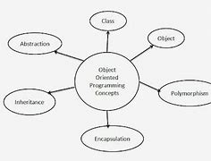

Pengertian
Metodologi berorientasi objek adalah suatu strategi pembangunan perangkat lunak yang mengorganisasikan perangkat lunak sebagai kumpulan objek yang berisi data dan operasi yang diberlakukan terhadapnva. Metodologi berorientasi objek merupakan suatu cara bagaimana sistem perangkat lunak dibangun melalui pendekatan objek secara sistematis. Metode berorientasi objek didasarkan pada penerapan prinsip-prinsip pengelolaan kompleksitas. Metode berorientasi objek meliputi rangkaian aktivitas analisis berorientasi objek, perancangan berorientasi objek, pemrograman berorientasi objek, dan pengujian berorientasi objek.
Pada saat ini, metode berorientasi objek banyak dipilih karena metodologi lama banyak menimbulkan masalah seperti adanya kesulitan pada saat mentransformasi hasil dari satu tahap pengembangan ke tahap berikutnya, misalnya pada metode pendekatan terstruktur, jenis aplikasi yang dikembangkan saat ini berbeda dengan masa lalu. Aplikasi yang dikembangkan pada saat ini sangat beragam (aplikasi bisnis. real-time, utility, dan sebagainva) dengan platform yang berbeda-beda, sehingga menimbulkan tuntutan kebutuhan metodologi pengembangan yang dapat mengakomodasi ke semua jenis aplikasi tersebut.